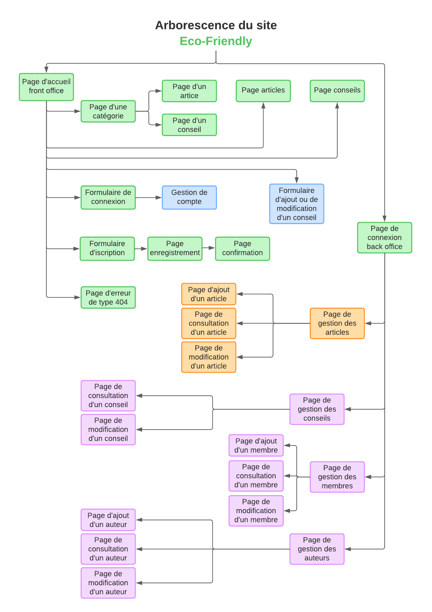
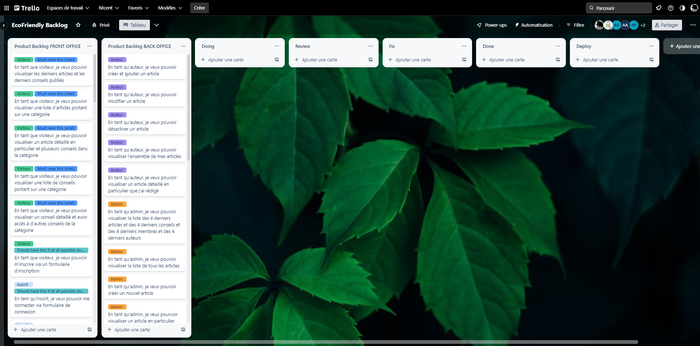
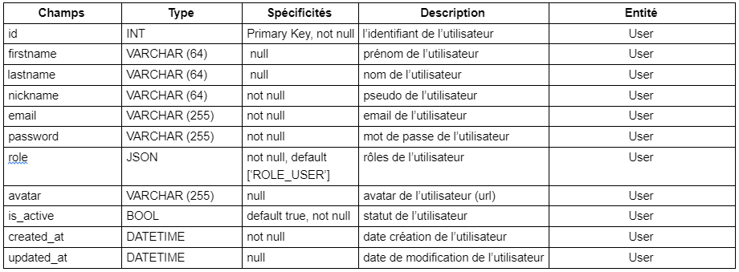
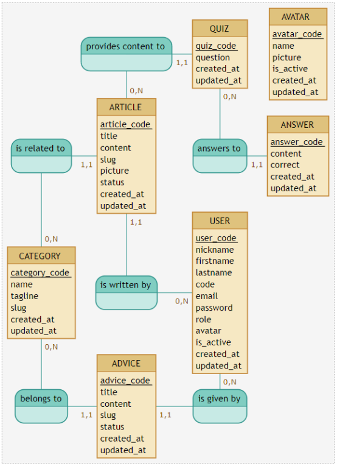
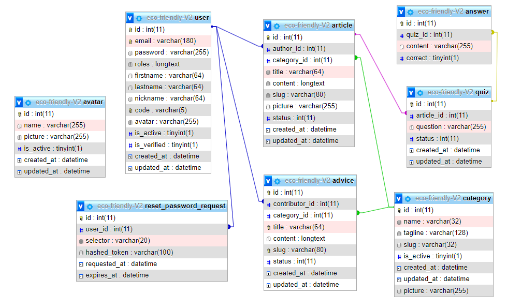
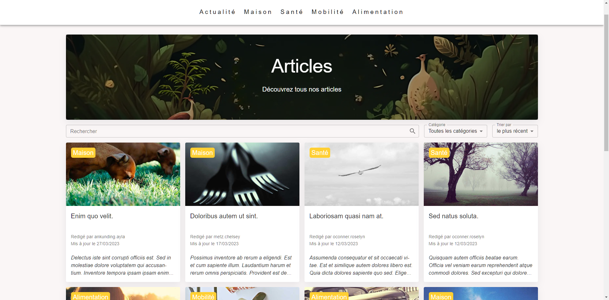
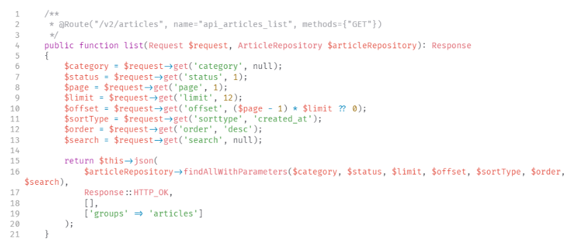
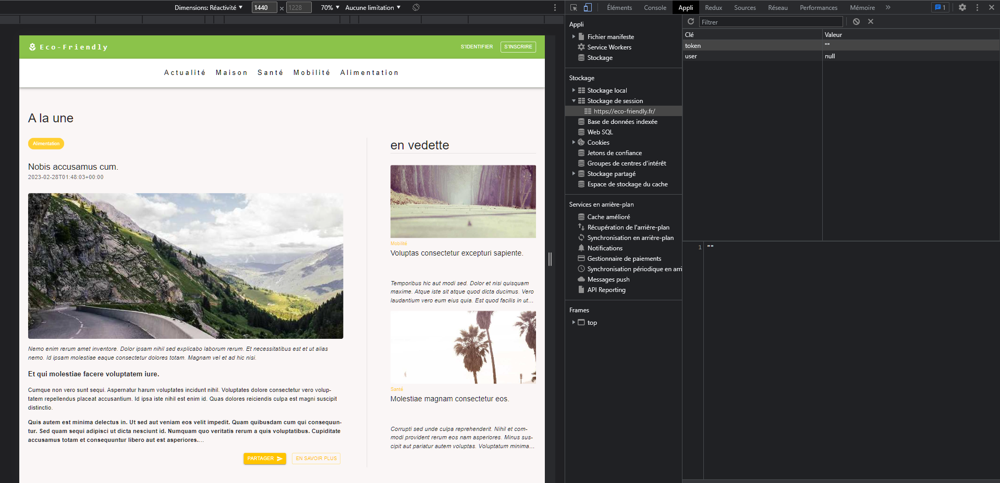

Titre professionnel
Développement Web et Web Mobile
Présenté et soutenu par Alban Caré
Développement Web et Web Mobile
Organisme de formation
sept 2022 - mars 2023
Présentation de la formation :
Le socle
Présentation de la formation :
La spécialisation
Présentation de la formation :
L'apothéose
Eco-friendly
Eco-friendly
Cahier des charges
Cahier des charges
Objectif de l’application
Créer une plateforme collaborative en ligne pour promouvoir l'écologie et l'écocitoyenneté.
Rôles utilisateus
- Visiteurs
- Membres (utilisateurs inscrits)
- Auteurs
- Administrateur
Spécifications fonctionnelles
front-end :
- Création d'une page d'accueil
- Création d'une page pour chaque catégorie
- Création d'une page pour tous les articles
- Création d'une page pour tous les conseils
- Création d'une page pour chaque article et conseil
- Création d'une page d'inscription et de connexion
- Création d'une page de profil
- Création d'un formulaire d'ajout/édition de conseil
- Possibilité de rechercher et/ou fitrer du contenu
- Possibilité de gérer les conseils
Spécifications fonctionnelles
back-end :
- Création d'une page de connexion
- Création d'une page d’accueil administrateur
- Création d'une page gestion de contenu administrateur
- Création d'une page gestion de contenu auteur
- Possibilité de stocker des informations via une API
- Possibilité de récupérer des informations via une API
User-stories
Arborescence du site
Wireframes
Product Backlog
Eco-friendly
Méthodologie de gestion de projet
Méthodologie de gestion de projet
Méthode AGILE/SCRUM
Sprints
4 SPRINTS, comprenant :
- "SPRINT PLANNING" (avant chaque sprint)
- "DAILY SCRUM" (tous les jours)
- "SPRINT REVIEW" (fin de sprint)
- "SPRINT RETROSPECTIVE" (fin de sprint)
Méthodologie de gestion de projet
L'environnement humain
6 développeurs (3 front-end / 3 back-end)
4 rôles définis :
- 2 Product Owner
- 2 Lead Dev
- Git Master
- Scrum Master
Méthodologie de gestion de projet
Les outils
- Discord : organisation des réunions
- Google Drive : stockage et partage des documents
- Trello : outil de gestion de projet agile
- Git : logiciel de gestion de version
- GitHub : stockage des dépôts et travaille en équipe
Eco-friendly
Conception et technologies
Conception et technologies
La modélisation des données
Dictionnaire de données : Les entités
Exemple : Entité User
7 entités :
- User
- Category
- Article
- Advice
- Quiz
- Answer
- Avatar
Conception et technologies
La modélisation des données
Modèle conceptuel de données (MCD)
Conception et technologies
La modélisation des données
Modèle logique de données (MLD)

Conception et technologies
La modélisation des données
Modèle physique de données (MPD)
Conception et technologies
Architecture et technologies
Front Office
- React
- Redux
- React-router-dom
- Axios
- Material-UI & Styled-components
Back Office
- Symfony
- Doctrine
- Bundles Symfony
- Twig
- Bootstrap
Elément significatif
La récupération d'articles
La récupération d'articles
La fonctionnalité de récupération des articles est l'une des principales fonctionnalités de l'application eco-friendly. Elle permet à l'utilisateur de visualiser les articles disponibles sur la plateforme.
La récupération d'articles
Les Actions
Une action est un objet JavaScript qui décrit un changement à apporter à l'état de l'application.
Il contient :
- le type de l'action (une chaîne de caractères qui décrit le type de changement)
- des données supplémentaires (payload) qui contiennent les informations nécessaires pour effectuer le changement

La récupération d'articles
Le composant ArticlePage
“useSelector” et “useDispatch” sont deux hooks fournis par la bibliothèque react-redux qui permettent de connecter les composants React à un store Redux.
Le hook useSelector permet d’écouter des parties spécifiques de l'état stocké dans le store.
Le hook useDispatch permet de récupérer la fonction dispatch de Redux dans un composant. Cette fonction permet de déclencher des actions qui mettront à jour l'état stocké dans le store.
La récupération d'articles
Le Middleware
Les middleware sont des fonctions qui interceptent les actions avant qu'elles n'atteignent le reducer et effectuent des traitements tels que les appels vers L’API.
La récupération d'articles
Le Controller
Les contrôleurs sont des classes qui traitent les demandes HTTP et contrôlent la logique métier de l'application.
Ils sont responsables de recevoir les requêtes des utilisateurs, de traiter les données et de renvoyer une réponse.
La récupération d'articles
Le Repository
Les référentiels sont des classes qui interagissent avec la base de données pour récupérer et modifier des données.
Ils encapsulent la logique de récupération des données de la base de données pour rendre le code du contrôleur plus propre et plus lisible.
La récupération d'articles
Le Reducer
Le reducer est une fonction qui reçoit les Actions et met à jour le state de l'application en fonction de l'action reçue
Jeu d’essai
Authentification de l'utilisateur et
enregistrement des données en session
Exemple de recherche
Bibliothèque pour l'éditeur de texte
Problématique :
Nous avions comme objectif de permettre à l'utilisateur de créer et de mettre en forme son conseil en utilisant un éditeur de texte riche (WYSIWYG)
Bibliothèque pour l'éditeur de texte
La première étape consistait à trouver une liste de Bibliothèque.
Termes de la recherche sur Google :
"rich text editor react project"
Bibliothèque pour l'éditeur de texte
La deuxième étape consistait à choisir un site qui propose une liste de bibliothèque.
Le choix s'est porté sur le site :
reactscript.com/best-rich-text-editor/
Bibliothèque pour l'éditeur de texte
La troisième étape consistait à comparer les bibliothèques entre elles.
Nous avons utilisé le site :
npmtrends.com
Bibliothèque pour l'éditeur de texte
La dernière étape consistait à vérifier que la bibliothèque correspondait à nos besoins et était correctement documentée.
Nous avons donc consulté la documentation de la bibliothèque :
Quilljs
Vulnérabilités de sécurité et veille
Vulnérabilités de sécurité : front-end
- L’utilisation de la librairie DOMPurify pour se prémunir des attaques de types XSS (non implémentée)
- L’utilisation de la librairie React-router-dom qui a permis de restreindre l'accès aux pages en fonction des permissions de l'utilisateur (ACL)
- La validation des entrées de formulaire (nativement ou grâce aux Regex) pour éviter les attaques d'injection SQL et les erreurs de typage des données grâce aux champs contrôlés.
- La mise en place d'une politique de mots de passe forte et la sécurisation par des jetons JWT tokens pour les communications vers le serveur a été sécurisée
- Configurer les en-têtes de sécurité Content-Security-Policy
Vulnérabilités de sécurité : back-end
- L’utilisation de la librairie HTMLpurifier pour se prémunir des attaques de types XSS
- L'utilisation du bundle nelmio/cors-bundle de Symfony pour permettre de configurer les paramètres CORS
- L'utilisation du bundle lexik/jwt-authentication-bundle afin d'ajouter une authentification par jeton (token) JSON Web Token (JWT)
- L'utilisation du bundle symfony/security-bundle qui fourni des fonctionnalités nécessaires pour la gestion des autorisations d'accès aux routes (ACL, Access Control List), la gestion des utilisateurs et des rôles (voters) ainsi qu'une protection contre les attaques CSRF en générant des jetons d'authentification (CSRF, Cross-Site Request Forgery) et en vérifiant l'origine des requêtes
- Limiter le nombre de requêtes par seconde faite à l'API (non implémenté) pour contrer les attaques par déni de service (DoS, Denial of Service)
Vulnérabilités de sécurité : serveur
- L’utilisation du protocole HTTPS pour chiffrer les communications entre le client et le serveur, ce qui permet d’éviter les attaques de type man-in-the-middle
- Sécurisation de l’accès au serveur par SSH, avec exclusivité de connexion par clé SSH et création d’un utilisateur unique aux droits limités pour chaque application
- Mises à jour régulières, pour remédier aux différentes failles de sécurités inhérentes aux bibliothèques et aux frameworks utilisés
- Surveillance des journaux Apache et PHP pour détecter les attaques
- Sauvegardes régulières des données et des fichiers de configuration
- L'ajout d'un module de configuration Apache, appelé "mod_headers", permet de définir les en-têtes HTTP envoyés avec les réponses du serveur.
Outils de veille
- Effectuer des tests de sécurité réguliers : observatory.mozilla.org